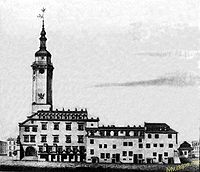

Львів — найбільше місто Західної України, що протягом багатовікової історії було науковим, культурним та національним центром регіону.
В найдавніші часи — столиця Галицько-Волинської держави,
згодом — адміністративний центр Руського воєводства,
автономного Королівства Галіції і Лодомерії.
У 1920 1918 році — столиця ЗУНР. Після захоплення міста Польщею Львів став центром однойменного воєводства.
У Другій світовій війні був окупований спочатку радянською, а потім німецькою арміями.
У повоєнний період відійшов до Радянського Союзу. З 1991 року — адміністративний центр Львіської області Незалежної України.